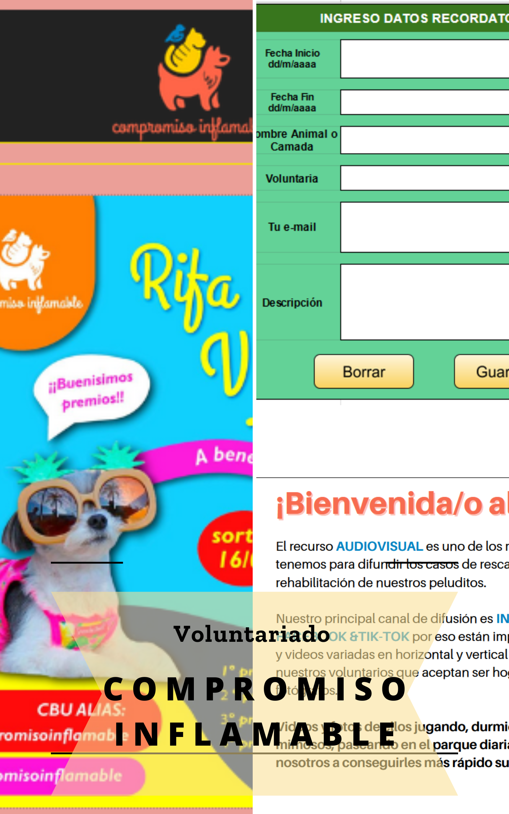

<div class="container-fluid " id="proyecto">
  <div class="row">
    <h2 style="text-align:center" class="mat-h2 float-start" >Mis Trabajos Realizados</h2>
          <div class="col-md-9 align-items-center" style="padding-right: 2em">
      </div>
  
        <div>
          <div class="col-sm-12 col-md-4 col-lg-4 offset-md-1 parte1">
               <br>
            <h3 style="text-align:center" class="mat-h2 float-start" >Voluntariado en Compromiso Inflamable</h3>
              <br>
            <strong>Actividades desde abril 2020 - marzo 2022</strong>
                   <p><br>Desarrollé actividades de apoyo en área informática. 
                    <br>Cree planillas para organizar la información de diferentes camadas de animales en adopción y adoptados.
                    <br>Brindé asesoramiento al staff en cuestiones informáticas. 
                    <br>Implementé forms para agilizar el proceso de selección de futuros adoptantes para las diferentes áreas de la organización.
                    <br>Efectivicé las bases para recibir donaciones on-line.
                    <br>Desarrollé actividades email marketing.
                    <br>Realicé guías de inicio de actividades a realizar para las diferentes áreas de la organización para futuros voluntarios.</p>
            </div>
            <div class="col-sm-12 col-md-4 col-lg-3 offset-md-1 offset-lg-1 parte2">
                
            </div>
        </div>
    </div>

   
